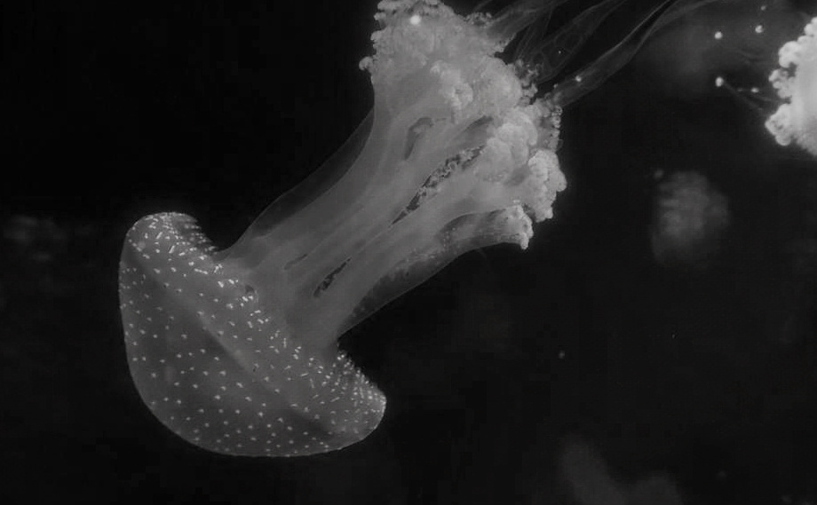

Medusa
0240715
Photography hosts low-resolution shots.
The aim of these pages is to share shots mostly taken during travels, as well as to highlight smaller image files for their reduced overall environmental impact compared to higher-resolution ones.

water - Valletta
0221124

black - Berlin
0230701
305.12 kB